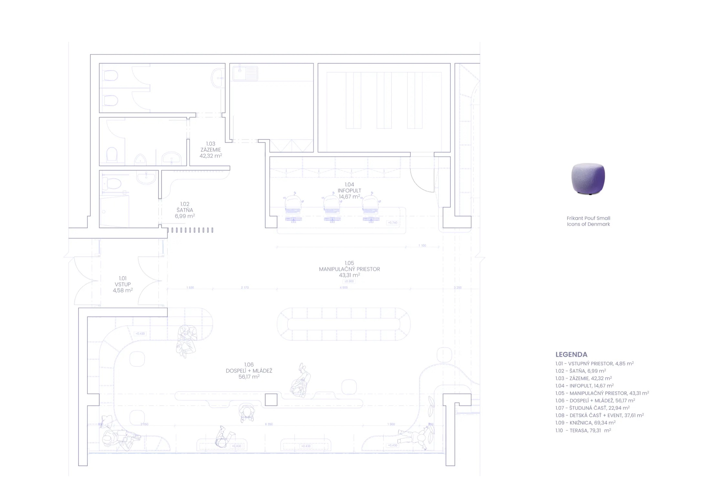

Karloveská knižnica
Cieľom návrhu bolo revitalizovať a funkčne preriešiť interiér Karloveskej knižnice — zatraktívniť priestor pre širokú verejnosť naprieč vekovými skupinami. Pôvodný stav netrpel ani tak zastaraným vybavením, ako chybnou priestorovou koncepciou: neusporiadanou, preplnenou mobiliárom a knižnicami, a preto nefunkčnou a neatraktívnou.
Návrh vytvára jeden veľký otvorený priestor členený na niekoľko celkov — šatňu, infopult, časť pre dospelých a mládež, variabilnú detskú časť prepojenú s priestorom na besiedky a podujatia, a samotnú knižnicu ako úložný priestor. Variabilita zadnej časti je umožnená knižnicami uloženými na koľajniciach, ktoré sa dajú jednoduchým presunom preskupiť a detskú časť tak rozšíriť na veľkorysý priestor pre podujatia.
Materiálovo je riešenie jednoduché — nábytok z dubového masívu, z ktorého sú vyrobené aj stropné akustické lamely, akcentovaný infopult z terazza s farebným kamenivom a menšie farebné akcenty v podobe puf sedení.

